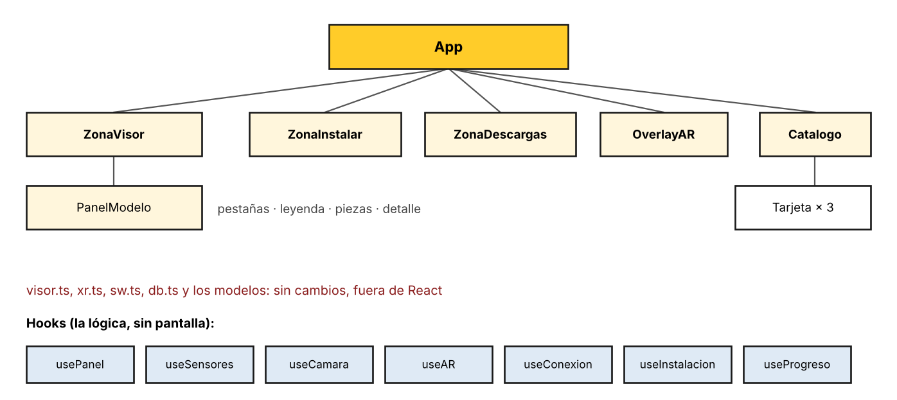

index.html queda con un solo <div id="root">. Además: react, react-dom, @vitejs/plugin-react, tipos y "jsx": "react-jsx".
Portada
Electiva · PWA — Sub-bloque B · Proyecto Módulo AR · Sesión 17 de 19
React y PWA
El mismo Atlas 3D, reconstruido con React: qué cambia en el código, qué no se toca (visor, AR, Service Worker) y qué dicen las cifras, con lo que mejora y con lo que empeora.
AsignaturaElectiva - PWA
Sesión17 de 19 · Proyecto Módulo AR
InstituciónUPTC
SESIÓN 17
Cambiar la pantalla, no el motor
React reparte la interfaz en piezas y la mantiene sincronizada con el estado. Three.js, WebXR y el Service Worker siguen siendo lo que eran.
Componentes y hooksLa fronteraLa comparación
Antes de empezar
Objetivos de aprendizaje
- Reconocer qué resuelve React y qué trabajo no le toca (Three.js, WebXR, Service Worker).
- Preparar Vite con React y repartir una app en componentes y hooks.
- Cuidar la frontera con el código imperativo:
useEffectcon limpieza,useRef,useSyncExternalStore. - Registrar el Service Worker con
useRegisterSWy comprobar que manifest y precaché siguen igual. - Reutilizar las pruebas anteriores como red de seguridad de una migración.
- Comparar con cifras reales y leerlas con honestidad.
.zip
Recursos: pwa-ar-objetos3d-sesion42.zip
CHECKPOINT · CIERRE DE LA SESIÓN 42 · PUNTO DE PARTIDA
El Atlas sin React. Es la línea base de la comparación.
.zip
Recursos: pwa-ar-objetos3d-sesion43.zip
VERSIÓN TERMINADA · + INFORMES HTML S42 Y S43
React · 1.1
Lo que es pantalla pasa a React; lo que es motor se queda
1
Antes: render() y oyentes
Un main.ts de 649 líneas: escribía el HTML como texto, buscaba botones con querySelectorAll y rehacía todo en cada cambio.
2
Con React
Se describe cómo se ve dado el estado y React calcula qué tocar. Ideal para listas, pestañas, textos y formularios.
3
Lo que no cambia
visor.ts, xr.ts, sw.ts, db.ts y los modelos como datos: son motores, no pantalla.
React · 1.2
La estructura del Atlas en React

Componentes arriba (dibujan); hooks abajo (guardan la lógica); en rojo, lo que está fuera de React.
React · 1.3
Quién guarda qué
| Pieza | Qué guarda o dibuja | Dónde estaba en la S42 |
|---|---|---|
usePanel | Modelo y pieza elegidos; ficha | 3 variables y 6 funciones que reescribían HTML |
useProgreso | Visitas, favoritos y notas | progresoPorId y oyentes de render() |
useAR · useSensores · useCamara | AR, sensores, cámara de fondo | Funciones sueltas y globales |
useConexion · useInstalacion | Banda sin conexión; instalación | Bloques de addEventListener |
ZonaVisor · PanelModelo | El visor y el panel | index.html + innerHTML |
Catalogo (Tarjeta) | Tarjetas con favorito y nota | La función render() |
ZonaInstalar · ZonaDescargas · OverlayAR | Instalar, descargar, capa de AR | index.html + oyentes |
Proyecto · 2.1
El punto de entrada: de 649 líneas a 12
src/main.tsx
createRoot(document.getElementById("root")!).render(
<StrictMode>
<App />
</StrictMode>
);Proyecto · 2.2
React en su propio paquete
vite.config.ts
// Sesión 42: Three.js (la mayor parte del peso) va en su propio archivo: el código de la app
// cambia cada sesión, Three.js casi nunca, y así son dos descargas que se pueden cachear por separado.
// Sesión 43: React va en otro paquete aparte, por la misma razón.
manualChunks(id) {
if (id.includes("node_modules/three/build/")) return "three";
if (/node_modules\/(react|react-dom|scheduler)\//.test(id)) return "react";
},La regla de Three.js apunta a
three/build/: con la carpeta entera arrastraba los controles y volvía el aviso de 500 kB.Proyecto · 2.3
La compilación, tal cual
Terminal
$ npm run build
✓ 70 modules transformed.
dist/index.html 0.93 kB │ gzip: 0.49 kB
dist/assets/index-C_Z4QQ-j.css 6.51 kB │ gzip: 1.83 kB
dist/assets/workbox-window.prod.es5-BqEJf4Xk.js 5.71 kB │ gzip: 2.34 kB
dist/assets/index-C65LVCWn.js 68.76 kB │ gzip: 22.38 kB
dist/assets/react-LTC9Rffj.js 221.71 kB │ gzip: 68.70 kB
dist/assets/three-DPr8S-9-.js 482.73 kB │ gzip: 122.01 kB
✓ built in 2.22s
PWA v1.3.0
✓ 89 modules transformed.
✓ built in 276ms
PWA v1.3.0
mode injectManifest
format: es
precache 10 entries (778.17 KiB)Tres archivos de código: app (68,76 kB), React (221,71 kB) y Three.js (482,73 kB). Precaché: 10 entradas, 778,17 KiB (S42: 9 entradas, 558,82 KiB).
Frontera · 3.1
Un manejador habla con el visor y con el estado
src/hooks/usePanel.ts
const elegirModelo = useCallback(
(id: string) => {
const def = modeloPorId(id);
if (!def || !visor) return;
visor.mostrarModelo(def);
setModeloId(id);
setPiezaId(null);
},
[visor]
);Imperativo («muestra este modelo») y declarativo («el modelo elegido es este») en la misma función.
Frontera · 3.2
Todo efecto que empieza algo debe saber deshacerlo
En desarrollo, StrictMode monta, desmonta y vuelve a montar a propósito.
src/App.tsx
const [visor, setVisor] = useState<Visor | null>(null);
const [aviso, setAviso] = useState("");
useEffect(() => {
const nuevo = crearVisor(contenedor.current!);
setVisor(nuevo);
return () => {
nuevo.destruir(); // la limpieza: sin ella, StrictMode dejaría dos lienzos
setVisor(null);
};
}, []);La línea clave:
nuevo.destruir(). Sin ella quedan dos lienzos.Frontera · 3.3
La prueba, y la prueba de la prueba
Terminal
$ node test_s43.js
A1) desarrollo con StrictMode → lienzos en el visor: 1
A2) cambiar de modelo en desarrollo → piezas: 5 | errores de página: []
B1) escribir una nota y marcar favorito otra tarjeta → nota conservada: "repasar el controlador" | botón: ★ Favorito
RESULTADO: todo en orden
$ sed -i 's|^ nuevo.destruir();| // nuevo.destruir();|' src/App.tsx (se comenta la limpieza del visor)
$ node test_s43.js
A1) desarrollo con StrictMode → lienzos en el visor: 2
✗ FALLÓ: debe haber un solo lienzo (el efecto del visor debe limpiar lo que creó)
A2) cambiar de modelo en desarrollo → piezas: 5 | errores de página: []
B1) escribir una nota y marcar favorito otra tarjeta → nota conservada: "repasar el controlador" | botón: ★ Favorito
RESULTADO: hay 1 fallosSin
destruir(): 2 lienzos. En producción StrictMode no actúa; el defecto sale en desarrollo, donde conviene. La línea se restauró y la prueba volvió a pasar.Estado externo · 4.1
Leer un valor que vive fuera de React
src/hooks/useInstalacion.ts
// Declaradas fuera del hook para que su identidad no cambie entre dibujos.
const suscribir = (avisar: () => void) => iniciarInstalacion(avisar);
const foto = () => `${estadoInstalacion()}|${instalacionRechazada()}`;
export function useInstalacion() {
const [estado, rechazada] = useSyncExternalStore(suscribir, foto).split("|");
const texto =
estado === "instalada" ? TEXTO_INSTALACION.instalada
: estado === "recien-instalada" ? TEXTO_INSTALACION.recienInstalada
: estado === "instalable" ? TEXTO_INSTALACION.instalable
: estado === "ios" ? TEXTO_INSTALACION.ios
: rechazada === "true" ? TEXTO_INSTALACION.rechazada
: TEXTO_INSTALACION.noDisponible;
return { instalable: estado === "instalable", texto, pedir: pedirInstalacion };
}suscribir y foto van fuera del hook (identidad estable). La foto es un texto: React compara con Object.is.Estado externo · 4.2
instalar.ts devuelve cómo dejar de escuchar
src/instalar.ts
// Sesión 43: en React todo efecto que empieza algo debe saber deshacerlo.
return () => {
window.removeEventListener("beforeinstallprompt", alOfrecer);
window.removeEventListener("appinstalled", alInstalar);
modo.removeEventListener("change", alCambiarModo);
avisar = () => {};
};Único archivo «de motor» que se tocó: antes los oyentes vivían toda la página; con StrictMode se registrarían dos veces.
Estado externo · 4.3
El Service Worker: otro que lo registra, el mismo sw.ts
src/App.tsx
const { offlineReady } = useRegisterSW({
immediate: true,
onOfflineReady() {
// El usuario está mirando la pantalla: la notificación solo si NO la está mirando.
if (document.visibilityState !== "visible") {
void mostrarAviso("Atlas 3D listo", "Ya funciona sin conexión.", import.meta.env.BASE_URL, "atlas-offline");
}
},
onRegisterError(error) {
console.error("Error al registrar el SW de Workbox:", error);
},
});Carrera nueva: el oyente de
beforeinstallprompt se registra después del primer dibujo. En la práctica el evento llega más tarde, pero en la S41 esa carrera no existía (actividad 4).Dos casos · 5.1
Un evento que React no conoce
WebXR pide un elemento como dom-overlay: se monta una vez (con ref) y solo cambia su texto. Los botones cancelan beforexrselect para no «colocar» el modelo.
src/componentes/OverlayAR.tsx
// Un toque sobre un botón del overlay NO debe contar como «tocar para colocar»: el navegador avisa
// con `beforexrselect` y basta cancelarlo. React no conoce ese evento, así que se enlaza a mano.
useEffect(() => {
const botones = [salir.current, ant.current, sig.current].filter((b): b is HTMLButtonElement => b !== null);
const cancelar = (e: Event) => e.preventDefault();
botones.forEach((b) => b.addEventListener("beforexrselect", cancelar));
return () => botones.forEach((b) => b.removeEventListener("beforexrselect", cancelar));
}, []);Dos casos · 5.2
Sesión 42: marcar favorito rehace todo
src/main.ts de la Sesión 42
appEl.querySelectorAll<HTMLButtonElement>(".btn-favorito").forEach((btn) =>
btn.addEventListener("click", async () => {
const id = btn.dataset.id!;
await alternarFavorito(db, id);
const todo = await obtenerTodoElProgreso(db);
progresoPorId = new Map(todo.map((p) => [p.modeloId, p]));
render();
})
);render() reescribe todo el catálogo: la nota escrita en otra tarjeta, desaparece.Dos casos · 5.3
Campo controlado: React solo toca la estrella
src/componentes/Catalogo.tsx (formateado)
<input
type="text" className="nota-input"
placeholder="Nota de estudio..."
value={nota}
onChange={(e) => setNota(e.target.value)}
/>Terminal
$ SOLO_B=1 DIR=s42 node test_s43.js
B1) escribir una nota y marcar favorito otra tarjeta → nota conservada: "" | botón: ★ Favorito
✗ FALLÓ: la nota escrita no debe borrarse
RESULTADO: hay 1 fallosContra la S42, la prueba detecta el defecto (nota:
""); contra la S43 la nota se conserva.Pruebas · 6.1
La lista de la S42, sobre el código de React
Terminal
$ S42DIR=s43 node test_s42.js
1) documento → {"lang":"es","viewport":"width=device-width, initial-scale=1.0","descr":140,"tema":"#0b1220","main":1,"h1":1,"contextoSeguro":true,"titulo":"Atlas 3D de Arquitectura de Software"}
2) manifest → errores de Chrome: [] | name: Atlas 3D de Arquitectura de Software | display: standalone | start_url: ./ | iconos: ["192x192","512x512","512x512/maskable"]
3) Chrome dice: errores de instalabilidad → []
4) service worker → {"activo":true,"controla":true,"precache":10}
5) servidor caído y recarga → {"canvas":1,"pestanas":3}
6) desplazamiento de diseño acumulado (CLS) al cargar → 0.008
7) escena quieta durante 1,5 s → llamadas de dibujo: 0
8) arrastrar para girar → llamadas de dibujo nuevas: sí (720)
9) tras soltar y pasar la inercia → vuelve a quedarse quieta: sí
10) elegir una pieza → llamadas de dibujo nuevas: sí
11) cambiar de modelo → llamadas de dibujo nuevas: sí
12) cambiar el tamaño de la ventana → llamadas de dibujo nuevas: sí
pageerrors: []
RESULTADO: todo en ordenPruebas · 6.2
Regresión: S41, S40 y subruta
Terminal
$ S41DIR=s43 node test_s41.js | tail -6
G2) se corta la red → banda: Sin conexión: los modelos y las fichas descargadas siguen disponibles.
G3) sin red se cambia de modelo → «Niveles apilados: cada capa solo habla con la inme…»
G4) vuelve la red → banda: Volvió la conexión.
G5) 3,3 s después → banda: null
pageerrors: []
RESULTADO: todo en orden
$ S40DIR=s43 node test_s40.js | tail -5
J2) dentro de AR → rastro: activa | diagnóstico: Última sesión de AR: sin registro.
J3) tras salir → rastro: fin-ok
J4) diagnóstico → Última sesión de AR: terminó completa (hace 1 s).
J5) rastro interrumpido simulado, tras recargar → Última sesión de AR: se interrumpió en el paso «fin-3-ancla» (hace 4 s). | panel abierto: true
pageerrors: []
$ node test_subruta.js
ficha → ["http://localhost:4195/atlas-3d/modelos/mvc.json",200]
descarga desde el botón → caché modelos-3d: ["http://localhost:4195/atlas-3d/modelos/capas.json","http://localhost:4195/atlas-3d/modelos/microservicios.json","http://localhost:4195/atlas-3d/modelos/mvc.json"]
peticiones fuera de la subruta o 404: [] | pageerrors: []Pruebas · 6.3
Una lección sobre las propias pruebas
Las pruebas de AR (IWER) fallaron con
Converting circular structure to JSON. No era la app: React guarda en cada elemento propiedades internas (__reactFiber$…) y el envoltorio de la prueba intentaba convertir a texto el elemento del overlay.Se corrigió en la prueba (un reemplazo que escribe
<xr-overlay>), no en la app. Moraleja: cuando una migración rompe una prueba, pregunta primero qué falla: la app o el instrumento. Las pruebas de la S39 a la S42 pasaron sin cambiar su lógica.Comparación · 7.1
Sin React y con React (mediana de 5)
| Medida | Sin React (S42) | Con React (S43) |
|---|---|---|
| Rendimiento | 83 | 91 |
| Accesibilidad · buenas prácticas · SEO | 100 · 100 · 100 | 100 · 100 · 100 |
| FCP | 1708 ms | 2248 ms |
| LCP | 2290 ms | 2393 ms |
| TBT | 554 ms | 253 ms |
| CLS | 0,05 | 0 |
| Precaché | 9 · 558,82 KiB | 10 · 778,17 KiB |
| JS app + React (sin comprimir) | 62,57 kB | 68,76 + 221,71 kB |
| Líneas de la interfaz | 722 | 978 (17 archivos) |
| Nota borrada al cambiar un favorito | Presente | Resuelto |
Comparación · 7.2
Las cinco corridas de cada versión

Rendimiento de React: 78, 91, 92, 94, 91. Sin React: 85, 83, 81, 88, 83. Una sola medición no decide nada.
Comparación · 7.3
Cómo leer estas cifras
- Puntaje arriba, primer contenido abajo: el HTML llega casi vacío y no hay nada que ver hasta que corre el JavaScript. FCP 1,7 → 2,25 s. El remedio (generar el HTML antes) no se aplicó hoy.
- El TBT bajó, pero no solo por React: con un FCP más tardío, parte del trabajo del hilo puede quedar fuera de la ventana que mide Lighthouse. Explicación plausible, no aislada.
- CLS 0: panel y visor nacen en el árbol con su espacio reservado.
- Peso: JS propio + React, más de cuatro veces; precaché +39 %. El beneficio no está en el tamaño sino en el código.
- Más líneas ≠ peor: 978 en 17 archivos pequeños y probables, frente a 722 en uno grande.
Comparación · 7.4
La misma pantalla: S42 a la izquierda, S43 a la derecha

Migrar no debe cambiar lo que ve el usuario, y aquí no cambió. No son las cifras de tu teléfono: Chromium sin GPU y lentitud simulada.
Comparación · 7.5
¿Conviene React para esta app?
Depende de qué se valore. Para un visor con poca pantalla, el costo en peso y en primer contenido es real. Para una interfaz que va a crecer (más fichas, más estados, más formularios), el orden y la capacidad de probar de los componentes pesan más.
La Sesión 45 retoma la pregunta con las versiones del Atlas puestas lado a lado.
Teléfono · 8.1
Publica la versión y pruébala tú
- Copia
pwa-ar-objetos3d-sesion43.zipsobre tu carpeta del proyecto (conserva.github/workflows/pages.yml), borrasrc/main.tsy ejecutanpm install. npm run dev(con StrictMode) ynpm run build+npm run preview: cambia entre modelos y mira que haya un solo visor.git add .,git commit,git push. Espera la marca verde en Actions.- En tu teléfono, recarga dos veces: el modelo gira y se queda quieto; elegir pieza y cambiar de modelo; «Ver en AR» entra y sale; sensores; botón «Instalar»; con modo avión, la app abre.
- Mide con Lighthouse (incógnito, «Móvil»): tres corridas de la S42 y tres de hoy; anota la mediana.
Actividades
Actividad 1: Mide las dos versiones en tu equipo
1
Mide las dos versiones en tu equipo
INDIVIDUAL · 60 MIN
Sirve la versión de la Sesión 42 y la de hoy. Corre Lighthouse tres veces en cada una (incógnito, móvil) y arma la tabla de medianas: rendimiento, FCP, LCP, TBT y CLS. Compara con la tabla de la guía.
Entregable: tus dos tablas y un párrafo con lo que coincide y lo que no.
Actividades
Actividad 2: Rompe la limpieza del visor
2
Rompe la limpieza del visor
EN PAREJAS · 45 MIN
Comenten nuevo.destruir(); en App.tsx, ejecuten npm run dev y cuenten los canvas dentro de #visor con las herramientas de desarrollo. Restauren y repitan.
Para pensar: ¿por qué el defecto aparece en desarrollo y no en la versión compilada?
Entregable: el número de lienzos con y sin la línea, y la respuesta.
Actividades
Actividad 3: Un componente nuevo: el contador de visitas
3
Un componente nuevo: el contador de visitas
INDIVIDUAL · 90 MIN
Añade a cada Tarjeta «Visitado N veces» con las pulsaciones de «Marcar como visto». Antes decide: ¿el contador es estado del componente o ya existe en useProgreso? Implementa lo más simple.
Entregable: el código y una frase que justifique dónde vive el dato.
Actividades
Actividad 4: La carrera del evento de instalación
4
La carrera del evento de instalación
INDIVIDUAL · 60 MIN
Mueve el addEventListener("beforeinstallprompt") de instalar.ts al cargar el módulo, guardando el evento en la variable. ¿Qué parte de useInstalacion debe cambiar para que el botón aparezca aunque el evento llegue antes? ¿Qué prueba de la S41 avisa si te equivocas?
Entregable: el cambio y la salida de test_s41.js antes y después.
Cierre
Resumen de la sesión
- React mantiene la pantalla sincronizada con el estado; lo que es motor (Three.js, WebXR, SW, IndexedDB) se queda fuera.
- En la frontera, todo efecto que empieza algo sabe deshacerlo; StrictMode lo comprueba y la prueba falla sin la limpieza.
useRef,useSyncExternalStoreyuseRegisterSWconectan React con el mundo imperativo.- Los campos controlados eliminaron un defecto real de la S42: la nota que se borraba.
- Las pruebas de la S39 a la S42 pasaron sin cambiar su lógica: red de seguridad de la migración.
- Medido: rendimiento 83 → 91 y CLS 0, pero FCP 1,7 → 2,25 s, JS propio más de cuatro veces mayor y +256 líneas. Nadie «gana» en todo.
Cierre
Próxima sesión
Sesión 44: el Atlas 3D en Angular. El mismo proyecto con otro framework: plantillas, servicios e inyección de dependencias, y qué se mantiene.
Cierre
Referencias
[1] React, "Learn React" y "You Might Not Need an Effect," react.dev/learn.
[2] React, "useSyncExternalStore" y "StrictMode," react.dev/reference/react.
[3] Vite, "Plugin React" y "Building for Production," vite.dev.
[4] vite-plugin-pwa, "Frameworks → React" (
useRegisterSW), vite-pwa-org.netlify.app.[5] web.dev, "FCP", "TBT" y "Rendering on the Web," web.dev/articles.
[6] W3C, "WebXR DOM Overlays Module" (
beforexrselect), w3.org/TR/webxr-dom-overlays-1.Cierre
Actualiza tu repositorio
Como en cada sesión del Sub-bloque B: sube el cambio de hoy a tu propio repositorio.
Terminal
npm install
git add .
git commit -m "Atlas 3D en React: componentes, hooks y useRegisterSW"
git push
Clic o → para continuar
01 / 35